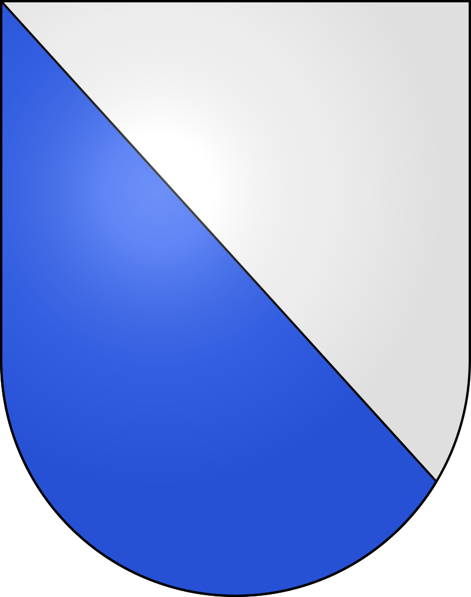
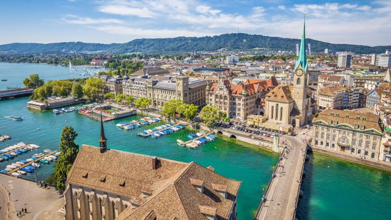
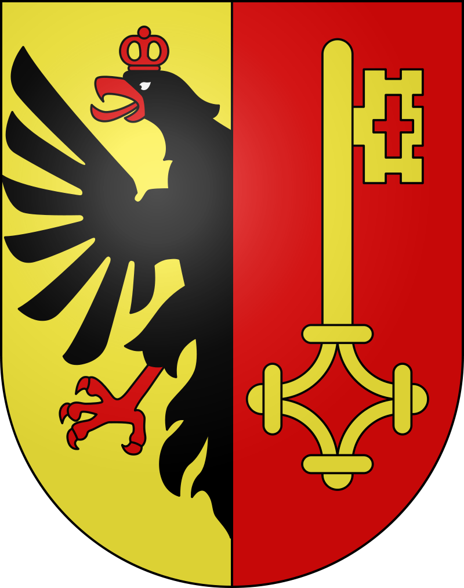
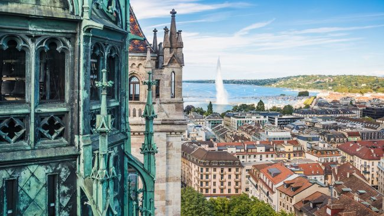
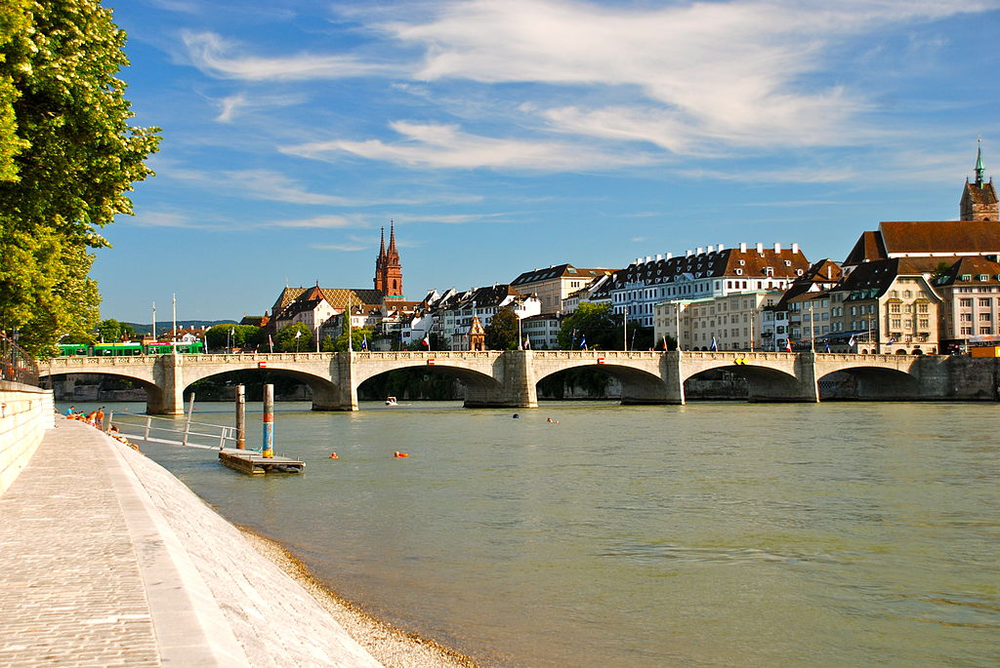

Ciudades Turisticos
En Suiza encontramos algunos de los pueblos y ciudades con mayor encanto de toda Europa. En este artículo, encontrarás una lista de los municipios más bonitos del país, con impresionantes imágenes, ordenados de menor a mayor belleza. Además, te damos datos interesantes, como la población existente en cada uno de ellos. ¿Cuál es la ciudad más bonita de Suiza?
Zúrich 
Zúrich es la población con mayor número de habitantes del país, con alrededor de 390.500 personas. Además, aquí se localiza el aeropuerto más grande del territorio. Dentro de su oferta cultural, destaca el Museo de Bellas Artes.

Ginebra 
En Ginebra hallamos la Catedral de San Pedro y el Monumento Internacional de la Reforma, entre otras obras de gran interés. Esta ciudad se encuentra en el extremo occidental de Suiza y en ella viven 194.600 personas.

Basilea
Basilea es uno de los centros mundiales de la industria farmacéutica, en términos de valor, más del 94% de las exportaciones de bienes de Basilea a la ciudad se realizan en los sectores químico y farmacéutico. Bases en las instalaciones de producción ubicadas en el vecino Schweizerhalle, Basilea representa el 20% de las exportaciones suizas y genera un tercio del producto nacional bruto.
